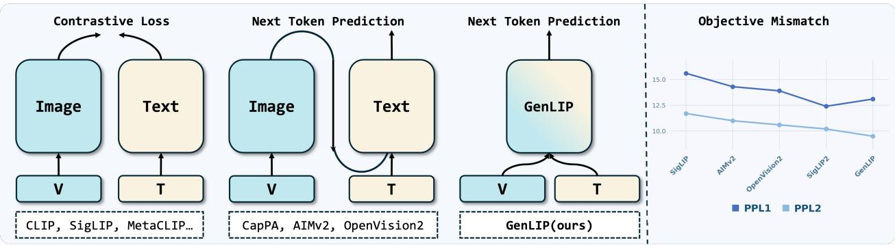

(c) Prefix-LM Attention Figure 2 An overview of the GenLIP framework for simple generative(c) Prefix-LM Attention Figure 2 An overview of the GenLIP framework for simple generative vision-language pretraining. (a) GenLIP Model Architecture: a single Transformer architecture processes a concatenated visual-prefix sequence. The next token prediction is performed exclusively on text tokens via a language modeling head. (b) Gated Attention Layer: the basic layer of GenLIP. The red line in the figure shows the forward path of the gating signal, which is element-wise multiplied with the attention output to control information flow. (c) Prefix-LM Attention Mechanism: image tokens attend bidirectionally, while text tokens attend causally. Multimodal Rotary Position Encoding (MRoPE) injects position information into the query (Q) and key (K) vectors.这张图概括 Let ViT Speak 的整体方法流程。阅读时先看模块之间传递的训练信号，再看作者如何把目标拆成可优化的子问题。

Figureure 1 · Overview of GenLIP and objective mismatch analysisFigure 1 Overview of GenLIP and objective mismatch analysis. Left: Compared with prior vision-language pretraining methods that rely on dual-encoder structures or additional text modules, GenLIP adopts a simplified architecture that directly trains visual tokens with next-token prediction. We use “V” and “T” to denote visual and textual inputs, respectively. Right: To diagnose the objective mismatch, we connect different vision encoders to an LLM through a projector and measure perplexity when tuning only the projector (PPL1) or tuning both the projector and LLM (PPL2). Lower perplexity indicates better compatibility with the LLM’s generative objective.这张图概括 Let ViT Speak 的整体方法流程。阅读时先看模块之间传递的训练信号，再看作者如何把目标拆成可优化的子问题。
核心问题
它直接挑战“图文视觉预训练必须靠对比学习或多塔结构”的假设，是视觉语言自监督目标设计的重要对照。
方法拆解
GenLIP 让 ViT 从 visual tokens 直接预测 language tokens，使用标准 language modeling objective；不需要 contrastive batch construction，也不额外加 text decoder。